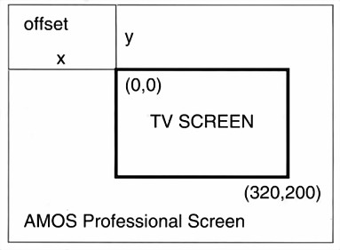

For example, to display screen zero, keeping its original width and height, this line could be used:
X> Screen Display 0,112,40,,
Only one screen at a time can be shown on each horizontal line of the display, but several screens can be placed on top of one another. If screens are placed next to each other, in other words if they are sewn together to make a continuous display, there is one line of pixels where the screens meet that becomes "dead". This effect can be seen by moving the mouse pointer between the Direct mode window and the Default Screen, where a line of "dead" pixels occurs.
One way of getting over this dead zone is to create an extra-large screen that is bigger than the TV display, and then move the visible area around inside its boundaries. When using extra-large screens, the area to be viewed is set with the SCREEN OFFSET command.
SCREEN OFFSET
instruction: offset screen at hardware coordinates
Screen Offset number,x,y
Look at the diagram below, where the area of the visible screen is shown as a sort of "port-hole" 320 pixels wide by 200 pixels high, inside a larger AMOS Professional screen. Of course, the port- hole can be made smaller using the SCREEN DISPLAY command.
The SCREEN OFFSET command is followed by the number of the screen to be displayed, then the x,y-coordinates of the "offset", which is the point where the top left-hand corner of the visible display is to start, measured from the top left-hand corner of the extra-large screen.